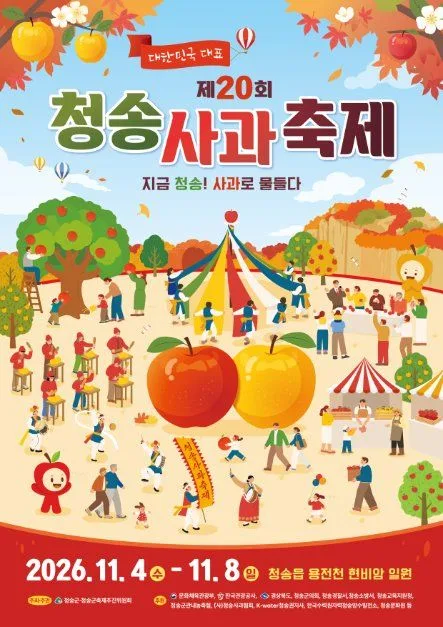
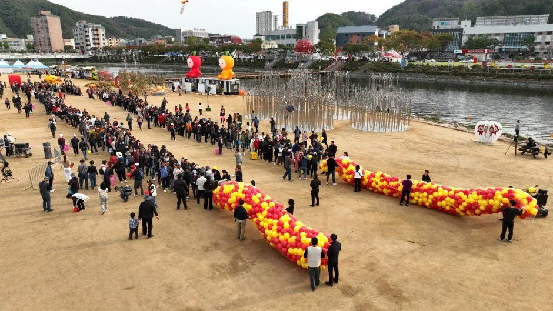
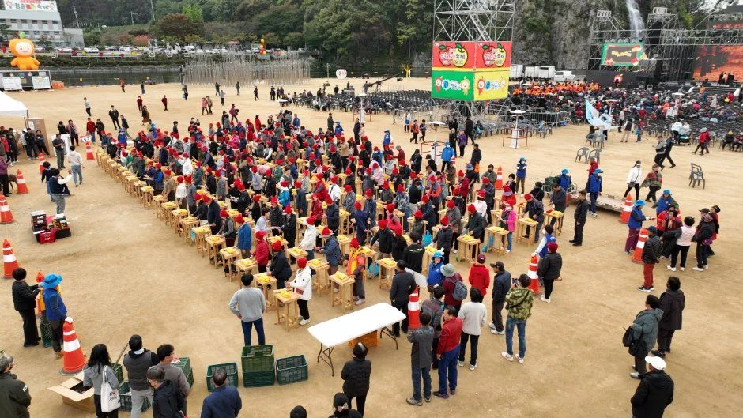
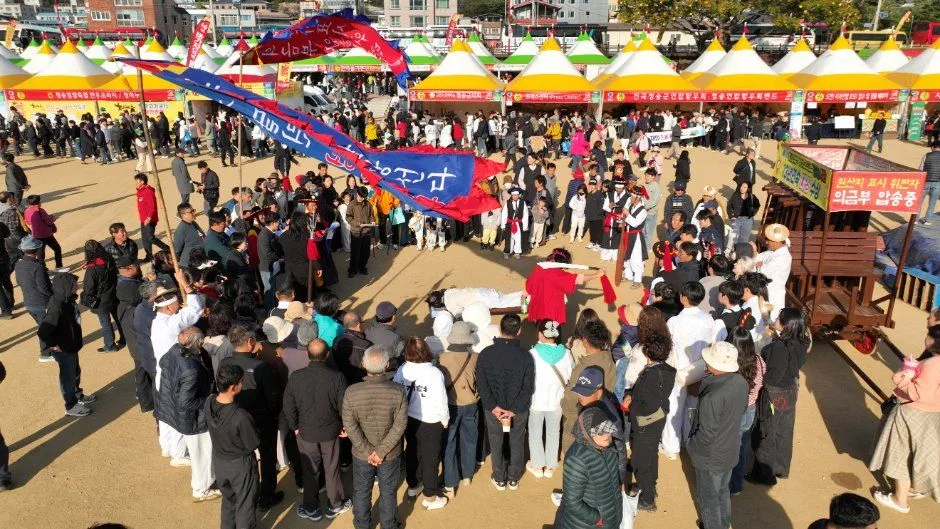
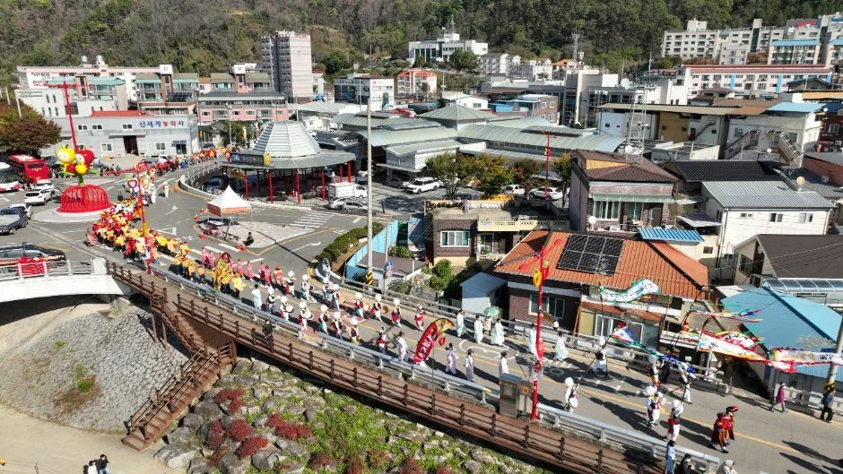
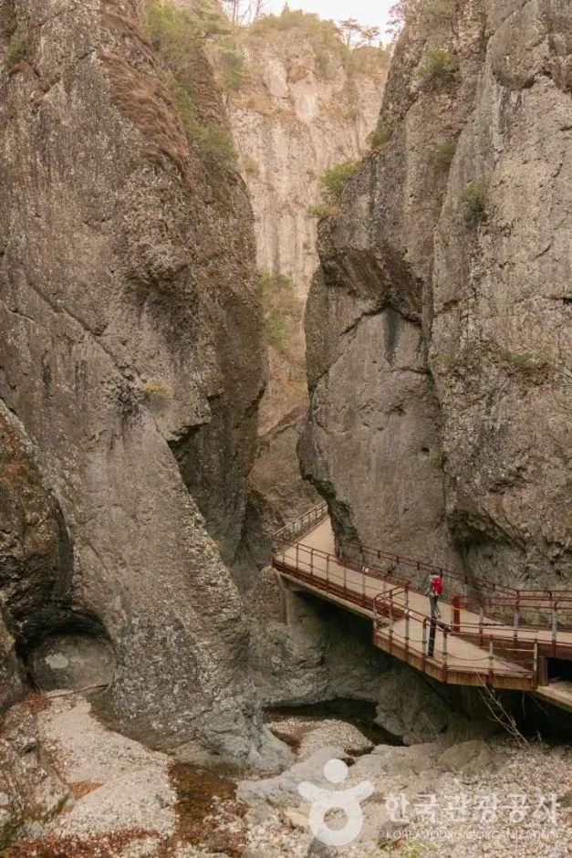
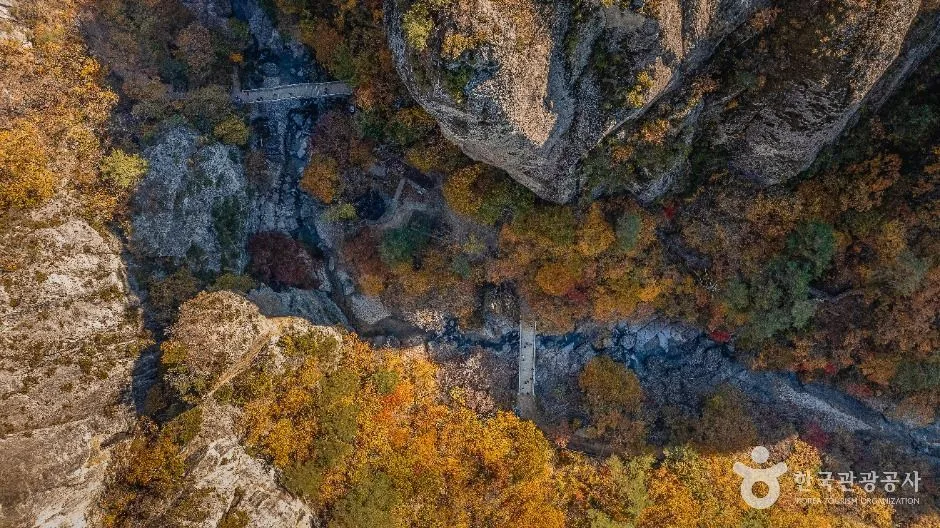
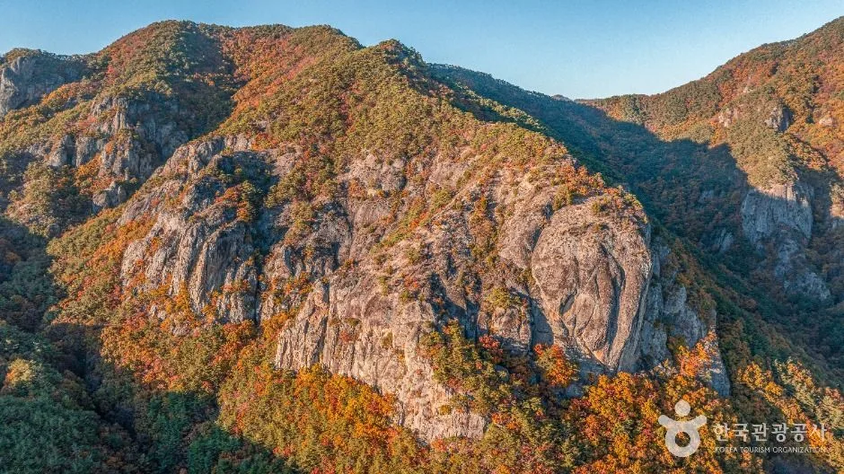
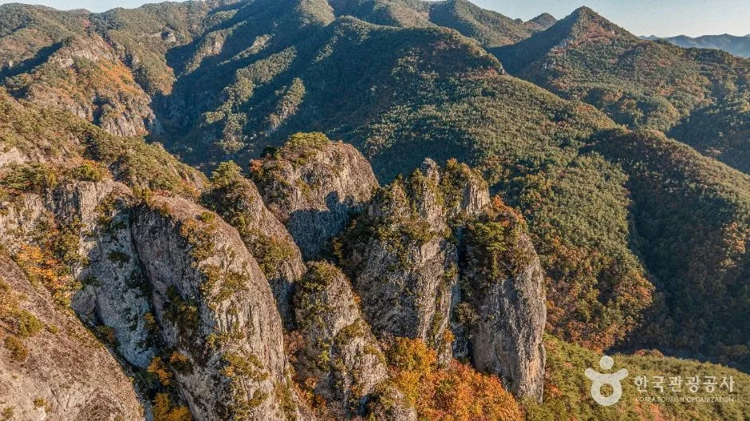
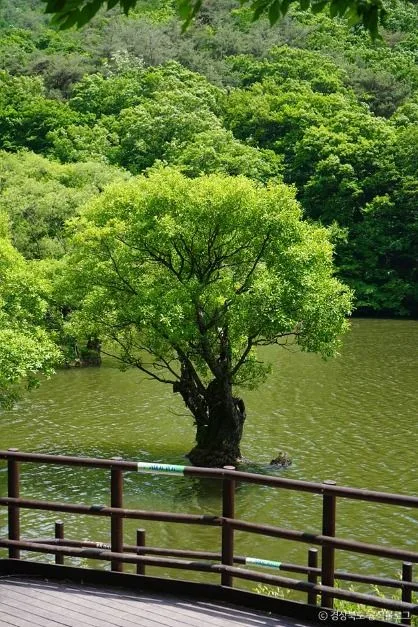

▲ 용전천 변 청송사과축제장. 이전 개최 때 사진이며 올해 현장이 아니다. 사진=한국관광공사
"사과는 어디서 사고, 차는 어디에 세울까?" 제20회 청송사과축제는 2026년 11월 4일(수)부터 8일(일)까지 닷새간 청송읍 용전천 현비암 일원에서 열린다. 올해 주제는 "지금 청송! 사과로 물들다"다. 10월 7일 다시 확인해 보니 공식 누리집이 제20회로 바뀌어 일자별 일정표, 프로그램 시간, 주차장 6곳 안내가 올라와 있었다. 이 글은 자차로 가는 사람을 위해 이 공식 자료와 한국관광공사 정보를 정리하고, 주왕산 연계 동선을 덧붙였다. 다만 셔틀버스, 사과 가격·원산지 표기 방식, 결제·택배는 공식 자료에서 찾지 못했고, 누리집의 주차 안내 페이지에는 연도 표기가 없어 올해 적용 여부를 표에서 따로 표시했다.
1. 한눈에 보기 — 일정·장소·요금
| 항목 | 내용 | 확인 상태 |
|---|---|---|
| 회차 | 제20회 | 공식 누리집 축제개요(10월 1일 공지)·경북매일·뉴스핌 일치 |
| 기간 | 2026년 11월 4일(수)~8일(일), 5일간 | 공식 누리집·한국관광공사·대구MBC·경북매일·뉴스핌 일치 |
| 장소 | 청송읍 용전천 현비암 일원. 누리집 오시는 길은 "월막교(청송읍 월막리 364번지 일원)", 한국관광공사 표기 주소는 청송읍 월막리 484-1 | 공식 누리집·한국관광공사 |
| 주제 | "지금 청송! 사과로 물들다" | 공식 누리집·대구MBC·경북매일 보도 |
| 주최·주관 | 주최 청송군, 주관 청송군축제추진위원회 | 공식 누리집 |
| 운영 시간 | 09:00~20:00(한국관광공사 표기). 누리집 일정표상 불꽃놀이는 11/4·6·7일 19:30, 11/5일 20:30, 11/8일 18:30 시작 | 일정표가 더 늦게 끝나는 날이 있음 |
| 입장료 | 무료(일부 체험 프로그램은 유료) | 한국관광공사 축제 정보 |
| 문의 | 축제추진위원회 054-873-3686, 관광정책과 054-870-6237(평일 09:00~18:00, 점심 12:00~13:00 제외, 주말·공휴일 휴무) | 공식 누리집 하단 |
| 온라인 병행 | 다음(Daum) 포털에서 9월 24일~11월 8일. 사과난타·사과선별로또 등 게임 4종, 청송사과·사과즙 경품 | 국제뉴스(9월 28일 보도)·뉴스핌 |
| 올해 신규 계획 | 장애인 편의시설 확충, 가족 단위 휴식 공간 조성 | 대구MBC·경북신문 보도(구체 위치는 미확인) |
| 셔틀버스 | 운행 여부를 어느 자료에서도 찾지 못함 | 미확인 |
ℹ️ 최신 안내는 공식 누리집에서
일자별 일정표, 프로그램, 주차 안내는 청송사과축제 공식 누리집에서 확인할 수 있다. 축제 일정표 바로가기

▲ 제20회 청송사과축제 공식 포스터. 2026.11.4.(수)~11.8.(일), 청송읍 용전천 현비암 일원으로 표기돼 있다. 사진=한국관광공사(원본 비율 유지)
▲ 용전천 변 축제장을 위에서 본 모습. 이전 개최 때 촬영한 사진으로, 올해 현장이 아니다. 사진=한국관광공사
2. 프로그램 — 공식 일정표로 본 닷새
누리집 프로그램 안내에 따르면 체험은 꿀잼-사과난타, 도전-사과선별로또, 황금사과를 찾아라가 중심이고, 사과 올림픽(사과 길게 깎기·당도 맞히기·높게 쌓기)은 소공연장에서 열린다. 사과난타는 보조무대 앞에서 선착순으로 접수하고, 사과선별로또는 체험지에 1~30번 중 5개를 적어 두면 매일 17시 사과 선별기로 번호를 뽑아 맞힌 개수에 따라 상품을 준다. 한국관광공사 정보에는 사과왕선발대회와 깜짝 사과 경매도 올라 있지만 누리집 일정표에서는 찾지 못했다. 아래는 일정표에서 가족 방문에 쓸 만한 항목만 추린 것이다.
| 날짜 | 낮 프로그램 | 저녁(주무대) |
|---|---|---|
| 11/4(수) | 08:00 청송도호부사 퍼레이드(터미널~축제장, 09:00 출발), 08:30 사과떡 솜씨 경연, 10:00 천지신명제, 10:30 문화제 개막식·축하공연, 14:00 사과 올림픽, 15:30 사과난타 | 17:00 사과선별로또 추첨, 18:00 청송문화제 축하공연(김용빈, 진해성, 천록담, 윤윤서, 앵두걸스 등), 19:30 불꽃놀이 |
| 11/5(목) | 10:00 내고장 청송 알기 퀴즈, 10:30 전국고교장사씨름대회(11:00 개회식), 13:00 소헌왕후 추모 헌다례, 15:00 황금사과를 찾아라, 16:00 사과난타 | 17:00 청송군민상 시상식·개막 퍼포먼스, 18:00 헬로콘서트 좋은날 녹화 공연(박서진, 안성훈, 박군 등), 20:30 불꽃놀이 |
| 11/6(금) | 10:00 시니어 한마당, 12:00 사과난타, 13:00 원산지 표시위반자 의금부 압송 시연, 14:00 황금사과, 15:00 줄다리기 대회(~17:00), 16:00 사과 올림픽 | 17:30 꿈의오케스트라청송, 18:00 사과축제 축하공연(이찬원, 장한별, 박구윤, 송민준, 정다경 등), 19:30 불꽃놀이 |
| 11/7(토) | 10:00 청송사과 퍼레이드(~12:00), 11:00 사과 올림픽, 12:00 사과난타, 13:00 청송사과 꽃줄엮기 전국대회(~18:00), 15:00 황금사과·의금부 압송 시연 | 18:00 세계유교문화축전(박지현, 손태진, 김희재, 장예주 등), 19:30 불꽃놀이 |
| 11/8(일) | 11:00 캐치! 티니핑 싱어롱쇼, 11:30 관광사진공모전 시상식·사과난타, 12:00 건강체조 경연(~15:00), 14:00 황금사과, 15:00 청송군민노래자랑(장민호, 김다현 등, ~17:00), 16:00 사과 올림픽 | 17:00 사과선별로또 추첨, 18:30 불꽃놀이 |
출연진은 누리집 일정표에 적힌 이름이며 방송 사정 등으로 바뀔 수 있다. 같은 누리집의 전시·판매·연계행사 페이지에는 청송문화제·씨름대회 등이 지난해 날짜(10월 29일~11월 2일)로 남아 있어, 연계행사는 일정표를 기준으로 보는 게 안전하다. 가족 나들이라면 토요일(11/7) 낮의 퍼레이드와 꽃줄엮기가 볼거리이고, 사과 올림픽·황금사과·사과난타는 매일 시간이 달라 일정표에서 날짜별 시각을 확인해야 한다.

▲ 꽃줄엮기 경연에 쓰이는 것으로 보이는 풍선 꽃줄. 이전 개최 때 사진이다. 사진=한국관광공사

▲ 모래밭에 긴 탁자를 놓고 많은 사람이 모인 행사 현장. 이전 개최 때 사진이며 올해 현장이 아니다. 사진=한국관광공사
3. 사과 직거래 — 판매 방식은 나왔고 가격은 없다
공식 누리집의 전시·판매 안내는 청송사과 정찰제 판매 및 시식코너, 사과막걸리·사과한과·사과 탄산음료 등 가공품 판매, 청송사과 전시·홍보관, 사과요리 전시, 떡 나눔 무료 시식코너(청송군여성단체협의회)를 열거한다. 한국관광공사 정보에는 사과 및 농특산물 판매가 올라 있다. 다만 올해 품목·등급·상자당 가격은 공식 자료에서 확인하지 못했고, 이 글은 가격표를 싣지 않는다.
원산지는 일정표의 "원산지 표시위반자 의금부 압송 시연"(11/6 13:00, 11/7 15:00, 11/8 15:00)에서 힌트를 얻을 수 있다. 청송사과 원산지 표시 위반자를 조선시대 형벌로 처벌하는 퍼포먼스라는 소개로 보아 원산지 표시를 중요하게 다룬다는 점은 읽히지만, 부스에서 표기를 어떻게 하는지는 확인하지 못했다. 누리집 하단에는 청송몰·청송사과유통센터·청송군농협조합공동사업법인·청송농협 바로가기 배너가 있어 온라인 구매 창구가 따로 있는 것으로 보이나, 현장 택배 접수와 결제 수단은 확인하지 못했다.
| 항목 | 확인된 내용 | 못 찾은 내용 |
|---|---|---|
| 판매 방식 | 정찰제 판매·시식코너, 가공품 판매, 떡 나눔 시식(공식 누리집) | 판매 농가 수, 부스 위치 |
| 원산지 | 원산지 표시위반자 의금부 압송 시연(11/6~8, 공식 일정표) | 부스 표기 방식, 단속 실적 |
| 가격 수준 | 2025년 개막 이틀째 경북매일은 평소보다 10~15% 저렴하다고 보도, 첫날 오후 4시까지 2,600상자 판매(2025년, 단일 매체) | 2026년 가격, 상자 규격별 단가 |
| 2023년 특징 | 제17회에는 꼭지를 자르지 않은 사과 판매가 특징으로 소개됨(서울신문) | 올해 적용 여부 |
| 바가지요금 대응 | 2023년 신고센터·전담 공무원 배치 계획(서울신문), 2025년 부스 평가제와 민원센터 2곳 운영(경북매일, 군수 기고) | 2026년 운영 계획 |
| 결제·택배 | 확인하지 못함 | 카드·지역사랑상품권 사용, 택배 접수 여부 |
✅ 구매 팁(일반적인 요령이며 공식 안내 아님)
· 사과 상자는 부피가 크므로 트렁크 공간을 비워 두면 편하다
· 상자는 귀가 직전에 사는 편이 짐 관리에 낫다
· 가격은 현장에서 시식 후 비교하고 부스 안내 문구를 확인하자
· 부당 요금은 현장 민원센터가 있다면 이용하자(올해 운영 여부는 미확인)

▲ 축제장에 모인 관람객. 이전 개최 때 사진이며 올해 현장이 아니다. 사진=한국관광공사
4. 자차·주차 — 누리집의 주차장 6곳
누리집 "주차 안내" 페이지에는 제1~6주차장이 올라 있다. 이 페이지에는 연도 표기가 없고, 지난해 안내를 옮긴 자료에 나온 네 곳(제1·2·4·6)과 번호·이름이 같아 지난해 구성이 이어진 것으로 보이지만 올해 적용을 못 박은 공지는 찾지 못했다. 한국관광공사 정보는 "전용 주차장 운영"이라고만 적는다. 셔틀버스 운영 여부는 어느 자료에서도 찾지 못했다. 임시주차장 요금도 안내가 없다.
| 구분 | 위치 | 주소·특기사항 |
|---|---|---|
| 제1주차장 | 월막교 우안 | 청송읍 월막리 481-3 |
| 제2주차장 | 월막교 좌안 | 청송읍 덕리 291-7 |
| 제3주차장 | 청송군보건의료원 앞 | 청송읍 금곡리 1056-20 |
| 제4주차장 | 종합문화복지타운 | 청송읍 금월로 244-12 |
| 제5주차장 | 청송군민운동장 | 청송읍 중앙로 306-39 |
| 제6주차장 | 청송중고등학교 | 청송읍 금곡1길 13. 소형차만, 토·일요일에만 주차 가능 |
ℹ️ 주차장 위치는 누리집에서
주차장 목록과 배치도는 청송사과축제 누리집에서 확인할 수 있다. 주차 안내 바로가기

▲ 다리 위 행렬과 청송읍 일대. 이전 개최 때 사진이며 올해 현장이 아니다. 사진=한국관광공사
주말(11월 7~8일)에 차가 몰릴 가능성은 크다고 보지만, 이는 짐작이며 혼잡 수치는 확인하지 못했다. 같은 시기 주왕산 단풍과 사과 수확이 겹쳐 국도 정체가 늘 수 있다는 점은 주왕산 이용 기사에서도 짚었다. 제6주차장은 토·일요일만 쓸 수 있으므로 평일(11월 4~6일)에는 월막교 쪽 제1·2주차장을 먼저 확인하는 것이 낫다. 문의는 054-870-6237(관광정책과)이다. 축제장 주소는 월막교 일대이므로 내비게이션에는 "청송사과축제장" 또는 "월막교"를 넣는 방법을 생각해 볼 수 있지만, 목적지 검색 결과는 출발 전에 확인하자.
5. 먹거리·체험 — 예산은 어떻게 잡나
입장은 무료이고 일부 체험만 유료다. 한국관광공사 정보의 먹거리 항목은 "전년도(2025년) 내용이며 2026년 내용은 업데이트 중"이라고 명시돼 있어 올해 메뉴·가격으로 읽으면 안 된다. 누리집에는 "인근 식당·숙박" 안내 페이지가 따로 있다. 아래는 비용을 가늠할 때 확인 상태다.
| 비용 항목 | 확인 상태 |
|---|---|
| 입장료 | 무료(한국관광공사) |
| 유료 체험 | 일부 유료, 종류·요금 미확인 |
| 임시주차장 | 요금 안내를 찾지 못함 |
| 사과·가공품 | 2026 가격 미확인 |
| 식사 | 한국관광공사 먹거리 정보는 2025년 기준, 2026 메뉴·가격 미확인 |
| 주왕산 주차 | 한국관광공사 정보는 소형 평일 4,000원·주말 5,000원이나 자료마다 다름(주왕산 기사 참고) |
6. 주왕산·주산지 연계 — 입산 시간과 단풍 시기를 먼저 보자
축제장이 있는 청송읍과 주왕산·주산지는 같은 군 안에 있어 하루 일정으로 묶기 쉽다. 입장료·주차료·도보 거리는 주왕산 기사에 정리했다. 한국관광공사 정보에는 주왕산국립공원 입장료가 무료이고 주차요금이 소형 평일 4,000원, 주말·집중수요기간 5,000원, 중·대형 6,000원·7,500원으로 적혀 있지만 다른 자료와 금액이 다르다. 주산지는 상시 개방이고 입장료가 없으며, 주차장에서 계곡을 따라 걸어 들어가야 한다.
⚠ 주왕산은 입산 마감이 이르다
한국관광공사 정보의 주왕산국립공원 입산 시간은 동절기(11월~3월) 04:00~15:00이고 구간별로 다르다고 한다(문의 주왕산국립공원사무소 054-870-5300). 축제가 열리는 11월은 동절기에 들어가므로, 축제를 먼저 보고 오후에 주왕산에 가는 일정은 입산 시간에 걸릴 수 있다. 주왕산을 오전에 먼저 다녀오고 축제는 오후·저녁에 보는 순서가 안전해 보이지만, 구간별 마감은 출발 전 확인해야 한다.
단풍 시기도 변수다. 한 검색 결과 요약은 주왕산 단풍 절정을 10월 28일~11월 2일로 소개했지만 출처가 불분명한 단일 정보이고, 10월 7일 현재 산림청·국립공원공단의 2026년 주왕산 단풍 예보는 찾지 못했다. 이 말이 맞다면 11월 4~8일은 절정을 지난 늦단풍 구간일 수 있다. 주왕산은 바위 지형 덕에 단풍이 늦게까지 남는 편이라는 점은 기존 기사에서 확인한 내용이다. 방문 직전에 주왕산국립공원 탐방 안내를 확인할 수 있다. 주왕산국립공원 바로가기

▲ 주왕산국립공원 계곡 구간의 탐방로 데크. 상시 풍경이며 이번 축제 현장이 아니다. 사진=한국관광공사

▲ 단풍이 든 주왕산국립공원 협곡 항공 사진. 이전 계절 촬영분이며 올해 단풍 상태가 아니다. 사진=한국관광공사

▲ 단풍이 든 주왕산 기암 절벽 일대. 이전 계절 촬영분이며 올해 단풍 상태가 아니다. 사진=한국관광공사
| 장소 | 주소 | 비고 |
|---|---|---|
| 주왕산국립공원 | 청송군 주왕산면 공원길 169-7 | 입장료 무료, 주차료는 자료마다 상이, 입산 시간 동절기 04:00~15:00(구간별 상이) |
| 주산지(청송 국가지질공원) | 청송군 주왕산면 주산지리 | 상시 개방, 주차 후 도보 접근 |
| 노루용추 계곡(청송 국가지질공원) | 청송군 청송읍 월외리 | 한국관광공사 등록 계곡 |
| 달기약수탕(청송 국가지질공원) | 청송군 청송읍 약수길 16 | 한국관광공사 등록 약수터 |

▲ 단풍철 주왕산의 기암 능선. 이전 계절 촬영분이며 올해 단풍 상태가 아니다. 사진=한국관광공사

▲ 주산지의 왕버들. 초록이 짙은 시기의 사진으로 단풍철 모습이 아니며 이번 축제와 무관한 상시 풍경이다. 사진=한국관광공사
사과 수확과 과수원 체험을 묶고 싶다면 사과 과수원 드라이브 기사에 충주·거창 코스를 정리해 뒀다. 청송읍에서 주왕산까지 이동 시간은 공식 자료에서 확인하지 못해 적지 않는다.
7. 일정 짜기 — 이렇게 하면 덜 붐빌 듯
| 상황 | 구상 | 근거 |
|---|---|---|
| 평일(11/4~6) | 오전 주왕산 → 낮 사과 구매·시식 → 저녁 공연·불꽃놀이(11/5는 20:30 시작) | 입산 시간(동절기 15:00까지)과 공식 일정표 기반의 짐작. 혼잡 자료 없음 |
| 토요일(11/7) | 오전 일찍 도착해 10시 사과 퍼레이드와 13시 꽃줄엮기를 보고, 임시주차장 위치 사전 확인 | 공식 일정표. 주말 혼잡은 짐작 |
| 일요일(11/8) | 불꽃놀이가 18:30으로 가장 일러 저녁 일정이 짧음. 11시·14시 캐릭터 싱어롱쇼는 어린이 동반 가족에 맞음 | 공식 일정표 |
| 단풍 목적 | 방문 직전 공단 안내 확인, 늦단풍 가능성 염두 | 공식 예보 미확인 |
✅ 출발 전 체크리스트
· 11/4(수)~8(일), 청송읍 용전천 현비암 일원(월막교 일대), 입장 무료(일부 체험 유료)
· 일자별 일정표·주차장 6곳은 공식 누리집에 게재. 주차 페이지는 연도 표기가 없으니 054-873-3686(축제추진위) 확인
· 제6주차장은 소형차만, 토·일요일만 가능
· 사과 가격·결제·택배는 올해 근거를 찾지 못함, 현장 시식·비교 후 구매
· 주왕산은 동절기 입산 마감이 15:00(구간별 상이), 단풍은 늦단풍일 수 있음
8. 정리
제20회 청송사과축제는 2026년 11월 4일부터 8일까지 청송읍 용전천 현비암 일원에서 열리며, 입장은 무료이고 일부 체험만 유료다. 공식 누리집에 일자별 일정표가 올라 있고, 11/7(토)에는 낮 10시 사과 퍼레이드와 13시 꽃줄엮기 전국대회, 저녁 콘서트와 불꽃놀이가 이어진다. 사과는 정찰제 판매·시식코너와 가공품 판매가 안내돼 있다.
주차는 누리집에 6곳이 올라 있지만 연도 표기가 없어 올해 적용 여부를 확인하지 못했고, 셔틀과 사과 가격, 택배 여부도 찾지 못했다. 주왕산은 11월 입산 마감이 15시이고 단풍은 절정을 지났을 수 있으니, 오전에 주왕산을 먼저 보고 오후에 축제장으로 가는 순서를 고려하되 공식 안내를 확인하고 출발하자.